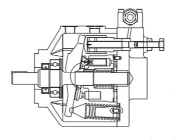
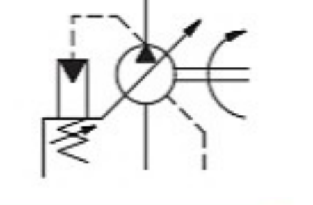

시리즈 번호
P16V : 16 cm³/rev
P21VM : 21 cm³/rev
HYDRAULICS / PISTON PUMP / P**V SERIES
제품소개 › 유압 › 펌프 › 피스톤 펌프
Low noise variable displacement piston pump
국산 P16V·P21VM 모델의 제품 기술 자료와 기본 사양을 빠르게 확인할 수 있습니다.

VARIABLE DISPLACEMENT PISTON PUMP
PRODUCT TECHNICAL DATA
제품 외관, 내부 단면 및 유압 심벌을 통해 P**V 시리즈의 기본 구성과 적용 특성을 빠르게 확인할 수 있습니다.

PRODUCT TECHNICAL DATA
압력보상제어 등 응답성, 안정성이 탁월한 다양한 기능을 갖추고 저소음, 고성능, 고신뢰성을 실현한 새로운 시리즈의 피스톤 펌프입니다. 보다 복잡한 시스템에 대응할 수 있고 펌프화도 손쉽게 행할 수 있어 주요 기기의 성에네르기화, 고속화, 저소음화 등의 다양한 요구에 응할 수 있습니다.

MODEL & SPECIFICATION
MODEL CODE
위 번호는 아래 선택 항목과 대응합니다. 실제 형식 선정은 운전 조건에 따라 기술 검토가 필요합니다.
P16V : 16 cm³/rev
P21VM : 21 cm³/rev
무기호 : 플랜지 취부형
F : FOOT 취부형
R : 우회전
축측에서 볼 때 시계방향
S : 편경전형
무기호 : REAR PORT형 SAE O-ring Seal 배관(1-1/16UN) 접속
G : REAR PORT형 SAE 4BOLT FLANGES 접속
T : SIDE PORT형 SAE 4BOLT FLANGES 접속
TU : SIDE PORT형 TU-PAC용 FLANGE 접속
CC : 최대용적 기능부착 압력보상 제어(1.5~21 MPa)
CMC : 최대용적 기능부착 압력보상 제어(1.5~10.5 MPa)
21 : 제어밸브 부착방향이 회전축에 대해 90°
체부 BOLT M5 육각구멍 렌치볼트
STANDARD SPECIFICATION
| 형식 | 최대 이론용적 cm³/rev | 최고 사용압력 MPa | 최고 회전수 min⁻¹ | 최저 회전수 min⁻¹ | 무게 kg |
|---|---|---|---|---|---|
| P16V | 16 | 21 | 1,800 | 600 | 12.2 |
| P21VM | 21 | 10.5 |
DOCUMENT ACCESS
자료를 전에 확인해 주세요.